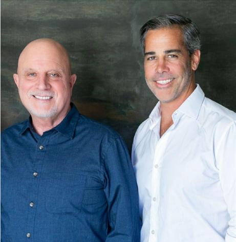

A modern IP company with a cross-media play.Una compañía moderna de PI con visión multimedia.
Crossing boundaries, uniting cultures, creating value. We find proven stories, formats and music from Latin America and Spain, and build them into film and television for audiences everywhere.Cruzando fronteras, uniendo culturas, creando valor. Encontramos historias, formatos y música probados de América Latina y España, y los convertimos en cine y televisión para audiencias de todo el mundo.
Latin culture has gone global.La cultura latina se volvió global.
Latin music, films, series and authors are topping charts worldwide. Yet much of the region's IP remains fragmented, underappreciated and disconnected from Hollywood. Rubicon exists to connect it: uniting Latin America, Spain and Hollywood to unlock its value on the world stage.La música, el cine, las series y los autores latinos encabezan listas en todo el mundo. Sin embargo, gran parte de la PI de la región sigue fragmentada, infravalorada y desconectada de Hollywood. Rubicon existe para conectarla: unir América Latina, España y Hollywood para liberar su valor a escala mundial.
Content aggregation, creation, monetizationAgregación, creación y monetización de contenido
Identify & source IPIdentificar y adquirir PI
We acquire, license and aggregate proven IP: content catalogs, music libraries, publishing and literary rights.Adquirimos, licenciamos y agregamos PI probada: catálogos de contenido, bibliotecas musicales, derechos editoriales y literarios.
Reimagine & produceReimaginar y producir
We turn that IP into new scripted series, films and formats in Spanish, English or both, built with co-production partners and international production.Convertimos esa PI en nuevas series, películas y formatos en español, inglés o ambos, con socios de coproducción y producción internacional.
Distribute & grow valueDistribuir y crecer el valor
Better distribution and new productions renew the underlying IP. More IP, more reach, more value: a virtuous cycle.Una mejor distribución y nuevas producciones renuevan la PI original. Más PI, más alcance, más valor: un círculo virtuoso.
Bilingual, bicultural, provenBilingües, biculturales, con trayectoria

Chris Albrecht
Co-founder. Created "must-watch TV" at HBO as chairman and CEO, overseeing The Sopranos, Sex and the City, Six Feet Under and Band of Brothers. As president and CEO of Starz he greenlit Power, and at Legendary Television he reworked the international co-production model with Drops of God, a Japanese manga made into a series shot in Japan and France and sold to Apple TV.Cofundador. Creó "televisión imperdible" en HBO como presidente y CEO, con The Sopranos, Sex and the City, Six Feet Under y Band of Brothers. Como presidente y CEO de Starz aprobó Power, y en Legendary Television rediseñó el modelo de coproducción internacional con Drops of God, un manga japonés convertido en serie rodada en Japón y Francia y vendida a Apple TV.

Jorge Granier
Co-founder. Founder-operator and Peabody-winning producer who builds, scales and sells creative businesses across media, music, tech and consumer. He licensed the Venezuelan telenovela Juana la Virgen and placed it at CBS Studios, creating Jane the Virgin, which he executive produced. The show has since been adapted in 17 territories and named one of The Hollywood Reporter's 50 best TV shows of the 21st century.Cofundador. Fundador-operador y productor ganador del Peabody que crea, escala y vende negocios creativos en medios, música, tecnología y consumo. Licenció la telenovela venezolana Juana la Virgen y la colocó en CBS Studios, dando origen a Jane the Virgin, de la que fue productor ejecutivo. La serie se ha adaptado en 17 territorios y The Hollywood Reporter la incluyó entre las 50 mejores series del siglo XXI.
PartnersSocios
Secuoya Studios
Current strategic partner. A Madrid-based studio and distributor led by James Costos, with offices in Spain, Latin America, Miami and Los Angeles. Socio estratégico actual. Estudio y distribuidora con sede en Madrid, liderada por James Costos, con oficinas en España, América Latina, Miami y Los Ángeles.
In developmentEn desarrollo
- A comedy series inspired by the life of Latin Grammy winner Eladio CarriónSerie de comedia inspirada en la vida del ganador del Latin Grammy Eladio CarriónIn developmentEn desarrollo · Deadline · Dec 6, 2023
- Prey Before You Eat (w/t): a bilingual crime drama with Curtis "50 Cent" JacksonPrey Before You Eat (título provisional): drama criminal bilingüe con Curtis "50 Cent" JacksonIn developmentEn desarrollo · Deadline · Nov 8, 2023
- Chris Albrecht and Jorge Granier launch Rubicon Global Media with Secuoya StudiosChris Albrecht y Jorge Granier lanzan Rubicon Global Media con Secuoya StudiosThe Hollywood Reporter · Aug 1, 2023
PartnershipsAlianzas
Rubicon Global Media does not accept unsolicited submissions or pitches. For partnership inquiries, please connect via LinkedIn.Rubicon Global Media no acepta propuestas ni material no solicitado. Para consultas sobre alianzas, conéctese con nosotros a través de LinkedIn.